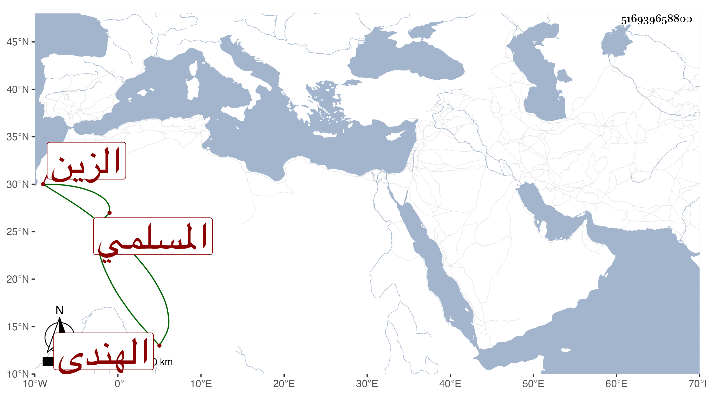

0902Sakhawi.DawLamic.ITO20230111-ara1.EIS1600.516939658800
Biography ID: 516939658800
611
مرجان الزين الهندى المسلمي بالتشديد مولى الشهاب بن مسلم المؤيدى . أخذه المؤيد قبل أن يلى السلطنة من أستاذه قهراً فنجب عنده وترقت منزلته جدا بحيث استقر خازنداره ثم عمله ناظر الخاص إلى أن اتضعت في أيام ططر فمن بعده وصودر حتى مات يعنى بالطاعون في جمادى الثانية سنة ثلاث وثلاثين . ذكره شيخنا في إنبائه وقال غيره إنه ولى بعد أستاذه أيضا الزمامية عوضا عن كافور الرومي الصرغتمشى أشهرًا .
